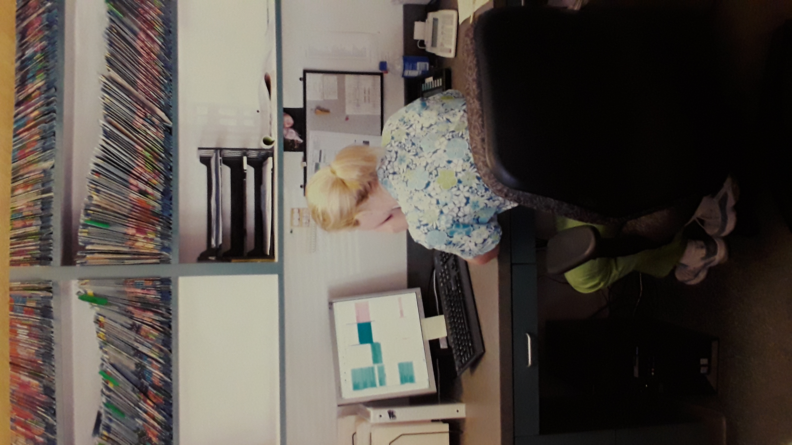

Last Updated: July 22, 2019
Career Buddy: Lariah Christensen
As a web developer, I have an overall mission to empower survivors of sexual assault and domestic violence take control of their reporting and healing process by equiping them and the forensic, medical, legal and advocate support professional community with innovative web and mobile technologies.
I focus on the mental, physical and emotional needs of survivors. And, appreciating a vision through a survivor’s eyes can help me (and others who may be involved) know where to keep my focus.
I generally like to focus on the big picture and the major problems surrounding survivor care. I then look to ways that I and others on my team can achieve solutions. I enjoy breaking down a vision into smaller, manageable goals. I then make a plan of the who, what, when where and how I get those goals accomplished and commit to a timeline.
Hi, I’m Marsha. I design and develop bold, innovative technology solutions to help survivor support agencies reach out and engage with their clients during their reporting and healing process. What technologies are you currently using in your organization?

Completing the DD Fullstack Bootcamp will give me the tools I need to help me find work in the tech industry. By participating in the professional development workshop weekly, I hope get the information I need to best position me for success in terms of career-building and highlighting my already diverse working background.
Looking forward to living a life of digital nomadism-- living and working from anywhere while supporting survivors and professionals that care for them.
I enjoyed the first week of the Fullstack coding camp, although I was surprised by the content. I envisioned all intensive camps to focus on coding challenges all day from 8 to 5 since there would be so much content to learn. I thought there would be very few breaks in between intense hours of code, however I am thrilled that pace is not the case.
I found the instructors and Deep Dive staff to be concerned and caring about keeping us on track and emphasizing that there is help if we ask for it. I also appreciate the different teaching styles and the various ways the content was presented. I feel more at ease after the week ended and look forward to the progress I’ll make.
This week was a challenge in learning Object-Oriented programming. Although some of the concepts were relatively easy to understand; namely accessors, mutators and constructors, I had a hard time understanding instantiation. Also a challenge, namespaces and their utility and the actual structure of coding in PHP. Looking forward to understanding the big picture.
How I work with my team - I've found in playing this game that we listen well to one another. When disagreements arise, we discuss our views and make decisions based on consensus of the group. We are not opposed to changing our minds when needed. And, we're okay with majority rules (2/3).
This week we were paired with our capstone team members. I'm thrilled about working on this project (Route 66 Signs) project since making a trip from the beginning to end is on my bucket list. A challenge with the project was finding an appropriate data set. Although we found one from the city with possible locations of the signs, we're unsure if the data provided with convert to appropraite long and lat. So, we may have to create our own data. Another challenge is finding the time to catch up on concepts that we're being introduced to. Wishing there was more time in the day.
Although working in teams is not usually my preferred way to develop and implement projects, working with my capstone team members has given me a new love for building things in teams. It's especially helpful when all of the knowledge about a certain task or project isn't just concentrated in one area or with one person. Sharing strategies and providing feedback and suggestions within the group takes pressure off one specific individual.
This past week, I felt a bit concerned about the coding assessment, and didn't realize that we could make use of all of the tools that we've learned in class, along with the sample coding resources, to use in preparation. Realizing this was the case eased any anxiety I had concerning the assessment.
Unit Testing has really helped me learn how to speak and write code. As we find errors, I'm forced to really look at what I write and the meaning behind it. I find unit testing to be one of the most useful cases in the bootcamp to date.